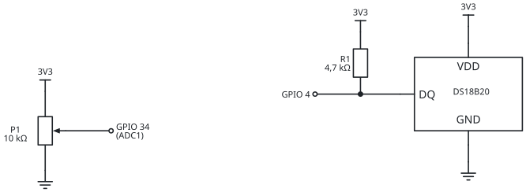

Proyecto 01 · Datalogger Web
Logger BLE
Un registrador de dos canales sin instalar nada: el ESP32 mide,
Bluetooth Low Energy transporta y el navegador registra.
Datalogger Web ESP32 · EL831 Instrumentación Electrónica · 2026
Hoy
Del sensor al CSV, sin cables
1 · 15 min
¿Qué es un datalogger?
3 · 15 min
El dato binario
5 · 45 min
Manos a la obra
6 · 30 min
Experimentos y discusión
Proyecto 01 · Logger BLE · Datalogger Web ESP32 · EL831 2026
2
1 · ¿Qué es un datalogger?
La cadena de medición completa
sensores
DS18B20 + pote
dos canales: temperatura digital y posición analógica
➔
enlace
Bluetooth LE
la única pieza nueva de hoy
➔
registro
Navegador
gráfico en vivo, estadísticas y CSV
◆Un datalogger no es "una página linda": es la etapa de
presentación y registro de la cadena de medición. Hoy el instrumento de registro es el navegador.
Proyecto 01 · Logger BLE · Datalogger Web ESP32 · EL831 2026
3
2 · BLE y GATT
BLE no es el Bluetooth de los auriculares
anuncia
Advertising
El periférico grita "acá estoy" varias veces por segundo. Nadie necesita emparejarse para escucharlo.
expone
GATT
Sus datos viven en una base jerárquica: servicios que agrupan características.
conecta
1 a 1
Un central se conecta y el anuncio se apaga: nadie más lo ve hasta que se suelte.
Pensado para sensores a pilas: tramas cortas, consumo mínimo, datos estructurados.
El Bluetooth "clásico" de audio es otro protocolo que comparte la radio.
Proyecto 01 · Logger BLE · Datalogger Web ESP32 · EL831 2026
4
2 · BLE y GATT
Nuestro GATT viene de fábrica
| Pieza | Valor | Qué significa |
|---|
| Servicio | 0x181A | Environmental Sensing (estándar Bluetooth SIG) |
| Característica | 0x2A6E | Temperature — el canal 1 |
| Característica | 0x2B04 | Percentage 8 — el pote: un canal = una característica |
| Propiedades | READ · NOTIFY | se puede leer, y además empuja cada valor nuevo |
| Formatos | sint16 × 0,01 °C · uint8 × 0,5 % | little-endian, definidos por la especificación |
◆UUIDs estándar = interoperabilidad por especificación.
Cualquier app del mundo que conozca la spec entiende a nuestro sensor sin leer nuestro código — la misma
idea de SCPI en los instrumentos de banco.
Proyecto 01 · Logger BLE · Datalogger Web ESP32 · EL831 2026
5
2 · BLE y GATT
Notify: el sensor empuja
push · hoy
Notificación
El cliente se suscribe una vez (descriptor CCCD) y después recibe cada valor nuevo
sin preguntar. Latencia mínima, cero pedidos de más.
pull · proyecto 02
Polling
El cliente pregunta cada 1 s aunque no haya nada nuevo.
Simple y universal, pero gasta pedidos y suma latencia.
La pregunta de diseño que vuelve en toda la materia: ¿quién decide cuándo viaja el dato,
el instrumento o el que lo consume?
Proyecto 01 · Logger BLE · Datalogger Web ESP32 · EL831 2026
6
3 · El dato binario
Dos bytes, nada de texto
➔
➔
➔
aire
2 bytes
contra ~6 del texto "24.31\n"
El precio del binario: sin la especificación, esos bytes no significan nada.
El texto se lee con los ojos; el binario exige un contrato. Elegir formato es elegir con quién vas a hablar.
Proyecto 01 · Logger BLE · Datalogger Web ESP32 · EL831 2026
7
4 · Web Bluetooth
El navegador habla BLE
requisito
HTTPS
solo en contexto seguro — por eso la app vive en GitHub Pages
requisito
Un gesto
la conexión arranca con un click del usuario, nunca sola
soporte
Chrome · Edge
en PC y Android
no está
iOS / Safari
estándar propuesto vs. adopción real — tema de discusión
◆El usuario elige el dispositivo en un diálogo del navegador:
la página nunca ve los equipos que no le mostraste. Seguridad por diseño, no por confianza.
Proyecto 01 · Logger BLE · Datalogger Web ESP32 · EL831 2026
8
4 · Web Bluetooth · el lado del ESP32
Firmware: publicar y notificar
// setup(): el GATT se arma una vez
BLEDevice::init("EL831-Logger");
BLEService* servicio = servidor->createService(BLEUUID((uint16_t)0x181A));
caracTemp = servicio->createCharacteristic(BLEUUID((uint16_t)0x2A6E),
PROPERTY_READ | PROPERTY_NOTIFY);
caracTemp->addDescriptor(new BLE2902()); // CCCD: habilita suscripciones
// loop(), una vez por segundo: sint16 en centésimas, little-endian
int16_t centesimas = (int16_t)lroundf(t * 100.0f);
caracTemp->setValue((uint8_t*)¢esimas, sizeof(centesimas));
if (hayCliente) caracTemp->notify();
// el canal 2 es OTRA característica: 0x2B04, uint8 × 0,5 %
uint8_t medios = (uint8_t)lroundf(pote * 2.0f);
caracPote->setValue(&medios, 1); if (hayCliente) caracPote->notify();
Proyecto 01 · Logger BLE · Datalogger Web ESP32 · EL831 2026
9
4 · Web Bluetooth · el lado del navegador
La app: todo el protocolo en 10 líneas
const disp = await navigator.bluetooth.requestDevice({
filters: [{ services: ['environmental_sensing'] }] // el usuario elige
});
const gatt = await disp.gatt.connect();
const svc = await gatt.getPrimaryService('environmental_sensing');
const ch = await svc.getCharacteristic('temperature');
ch.addEventListener('characteristicvaluechanged', e =>
agregarMuestra(e.target.value.getInt16(0, true) / 100)); // LE ÷ 100
await ch.startNotifications();
// el pote: igual, con getCharacteristic(0x2B04) y getUint8(0) ÷ 2
La página entera es un solo HTML sin dependencias: leerla es parte del ejercicio.
Proyecto 01 · Logger BLE · Datalogger Web ESP32 · EL831 2026
10
5 · Manos a la obra
Cuatro pasos y registrando
1
Cablear: DS18B20 en GPIO 4 (pull-up 4,7 kΩ) y pote al GPIO 34 (ADC1 · en C3: GPIO 3), extremos a 3V3 y GND.
2
PlatformIO → subir el proyecto esp32_ble. Cambiar NOMBRE_BLE por el del grupo.
3
Abrir la app (GitHub Pages) en Chrome/Edge y tocar Conectar.
4
Registrar y exportar: gráfico en vivo → Descargar CSV.

Sin sensor: SIMULAR = true en el firmware, o ?demo=1 en la app.
Proyecto 01 · Logger BLE · Datalogger Web ESP32 · EL831 2026
11
6 · Discusión
¿Qué hora es? La pone el navegador
esp32
Mide a su ritmo
una muestra por segundo… según su reloj, sin fecha ni hora
➔
ble
Transporta
con el retardo y el jitter del intervalo de conexión
➔
navegador
Fecha y hora
el timestamp se estampa al llegar, no al medir
◆Mirar el CSV: ¿las muestras están cada 1,000 s exactos?
El jitter del enlace queda impreso en el registro. ¿Cuánto vale? ¿Importa para una temperatura? ¿Y para una vibración?
Proyecto 01 · Logger BLE · Datalogger Web ESP32 · EL831 2026
12
6 · Experimentos
Para hacer en el banco
a
Apretar el sensor y girar el pote
las dos curvas responden: una lenta (térmica), otra instantánea (posición). Dos físicas, un logger.
b
Caminar hasta perder el enlace
¿a cuántos metros corta? ¿La app lo marca? ¿Qué pasó con el registro?
c
Conectarse al ESP32 del vecino
no se puede mientras el dueño esté conectado: BLE es 1 a 1. ¿Por qué?
d
Exportar y analizar
abrir el CSV en una planilla: media, desvío y el intervalo real entre muestras.
Proyecto 01 · Logger BLE · Datalogger Web ESP32 · EL831 2026
13
6 · Antes de pedir ayuda
Errores típicos
"Web Bluetooth no disponible"
la página está en http://, o es iPhone/Safari. Chrome o Edge, y HTTPS.
No aparece el dispositivo
otro cliente ya está conectado (1 a 1), el ESP32 sin alimentar, o el Bluetooth de la PC apagado.
Marca −127 o ERROR
falta el pull-up de 4,7 kΩ o DATA está en otro GPIO. Mirar el Serial Monitor: es el testigo.
No compila: no entra en flash
la pila BLE es grande — el proyecto ya trae huge_app.csv; no borrar esa línea.
Proyecto 01 · Logger BLE · Datalogger Web ESP32 · EL831 2026
14
Cierre
Lo que queda picando
pregunta
¿Cómo sabrías que se perdió una muestra?
No hay numerador de secuencia. ¿Dónde lo agregarías… sin romper la especificación de 0x2A6E?
pregunta
¿Y si quieren mirar dos personas?
BLE es 1 a 1. Para compartir el dato hace falta otra topología…
▶Próxima clase — Logger WiFi:
el instrumento crea su propia red, sirve su propia app y atiende varios clientes a la vez.
Mismo sensor, misma página: solo cambia el enlace.
Proyecto 01 · Logger BLE · Datalogger Web ESP32 · EL831 2026
15
Proyecto 01 · Logger BLE
El navegador es
el instrumento
App: fernandorvs.github.io/Datalogger-Web-ESP32-2026
Código y guías: github.com/fernandorvs/Datalogger-Web-ESP32-2026
Datalogger Web ESP32 · EL831 Instrumentación Electrónica · 2026